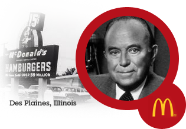
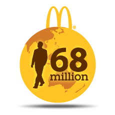
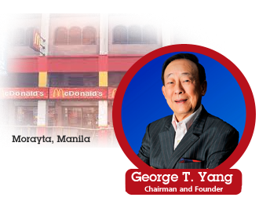
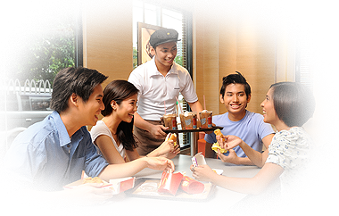

1955: The Founder
Ray Kroc started it all when he bought the franchise of a small burger joint owned by brothers Dick and Mac McDonald. He opened his first restaurant in Des Plaines, Illinois and five years later, he bought the exclusive rights of the name, McDonald's.

68 Million people served WorldWide
McDonald's continues to serve close to 68 million in over 119 countries every day, making it the number one quick-service restaurant in the world.

1981: First Golden Arches in the Philippines
George T. Yang opened the first McDonald's restaurant in the Philippines in 1981. In 2005, McDonald's Philippines became a 100% Filipino-owned company.
More than 400 stores nationwide and counting
Today, McDonald's has grown to become one of the country's leading fast food chains with more than 400 restaurants nationwide. With Kenneth S. Yang now at the helm as President and Chief Executive Officer, McDonald's is now a multi-billion peso company that continues to grow serving Filipinos all over the country.

Vision: Una sa Pamilyang Pinoy
First to respond to the fast changing needs of the Filipino family.
First choice when it comes to food and dining experience.
First mention as the ideal employer and socially responsible company.
First to respond to the changing lifestyle of the Filipino family.
Mission
To serve the Filipino community by providing great-tasting food
and the most relevant customer delight experience.